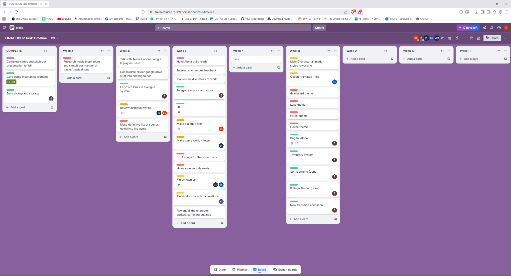
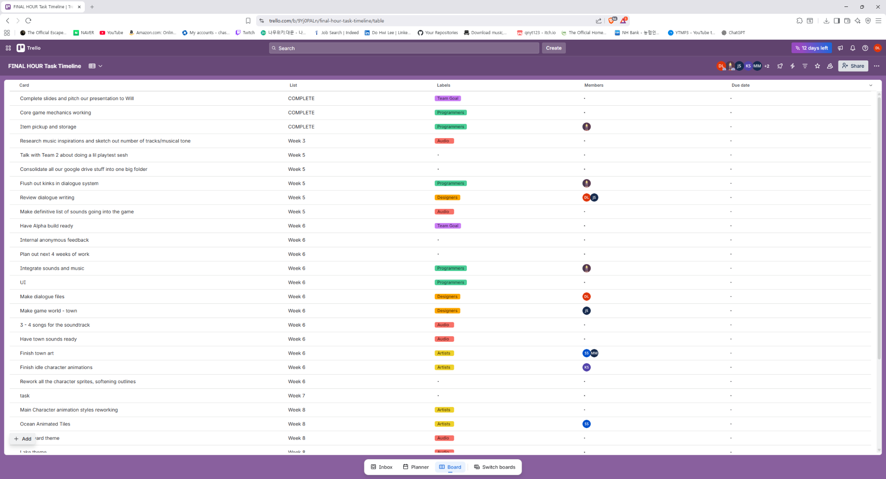
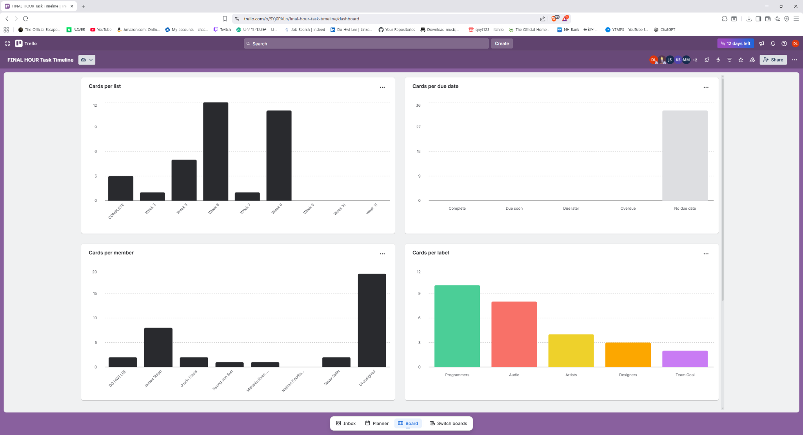

Core responsibilities
- Owned milestone planning and a weekly cadence (priorities, blockers, dependencies).
- Structured work breakdown (epics → tasks) with clear acceptance criteria.
- Supported ship readiness by clarifying risks, scope boundaries, and next actions.
- Established triage + verification habits to reduce regressions and improve release confidence.
Final Hour media
 1 / 4
Unity scene (interior)
1 / 4
Unity scene (interior)
Supporting case
Case 01 — Milestone slippage control
- Context: Milestones started slipping due to unclear weekly priorities and ownership across disciplines.
- Actions: Set up a weekly planning cadence in Trello (by week), assigned owners, and used discipline labels to surface blockers early.
- Impact: Reduced milestone delay frequency by improving visibility and tightening weekly execution.
- Evidence: Trello weekly board (planning cadence + ownership).

Trello board view — weekly planning cadence.
Case 02 — Scope reduction to hit ship date
- Context: Narrative scope threatened the schedule late in the milestone.
- Actions: Cut a small number of characters / lines and re-baselined remaining work to protect the release date.
- Impact: Reduced workload and kept the project on track for an on-time release.
- Evidence: Trello table view (task-level tracking with labels/owners).

Trello table view — task-level tracking.
Case 03 — Pipeline improvement for narrative updates
- Stakeholders: Lead Narrative, Programmer, Art.
- Change: Implemented a CSV-to-Unity update flow to reduce manual edits and keep content updates consistent.
- Impact: Improved turnaround time for narrative updates and reduced manual error risk during iteration.
- Evidence: Trello dashboard (work distribution + label coverage).

Trello dashboard — distribution and progress snapshot.